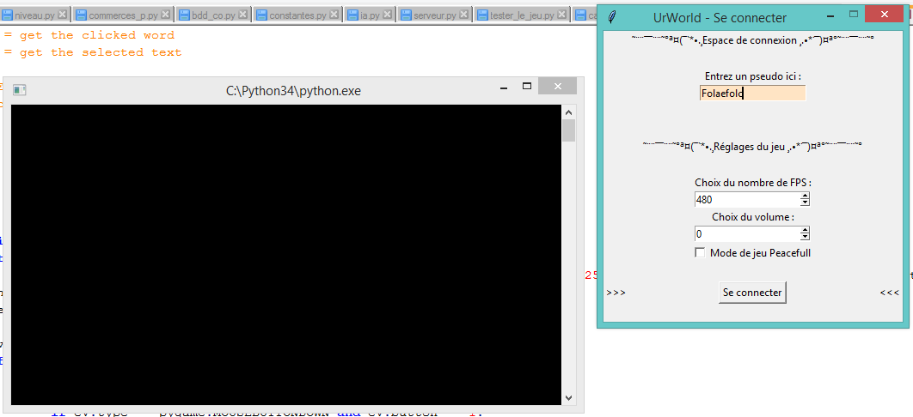
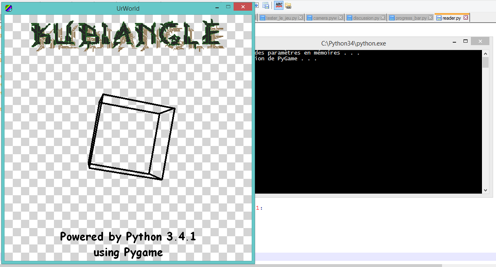
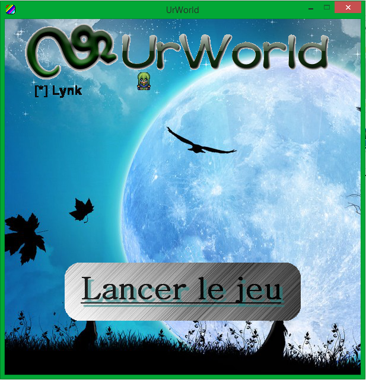
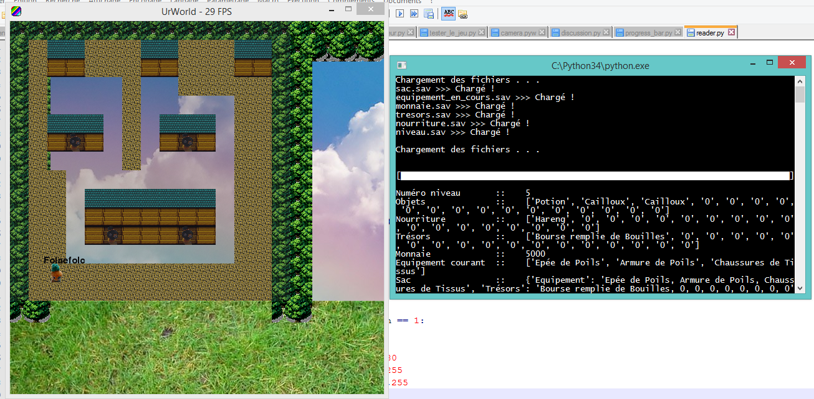
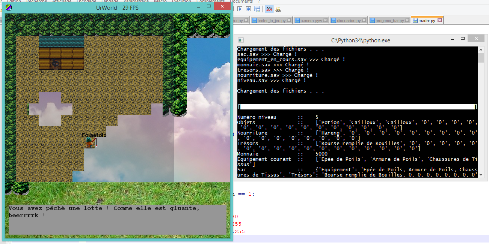
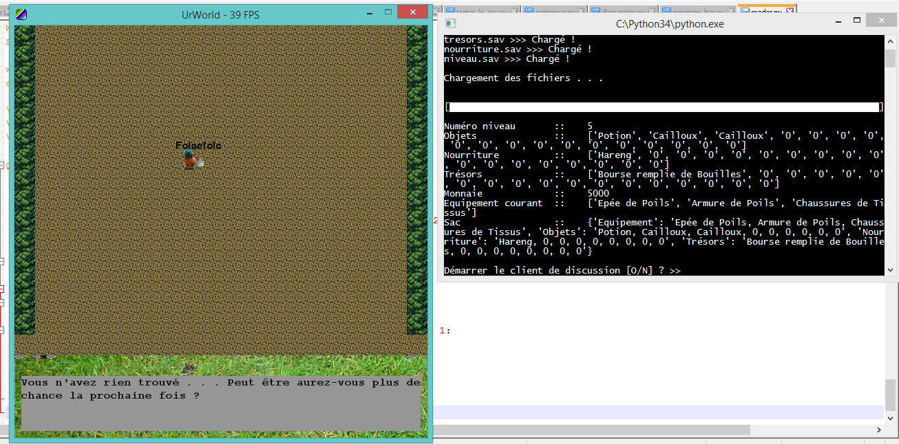
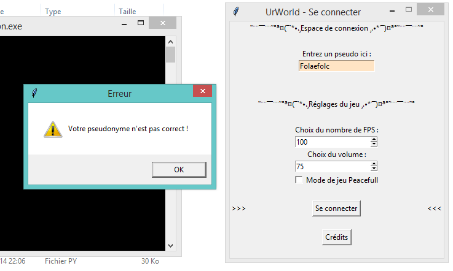
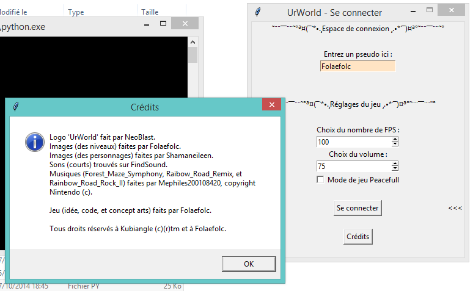
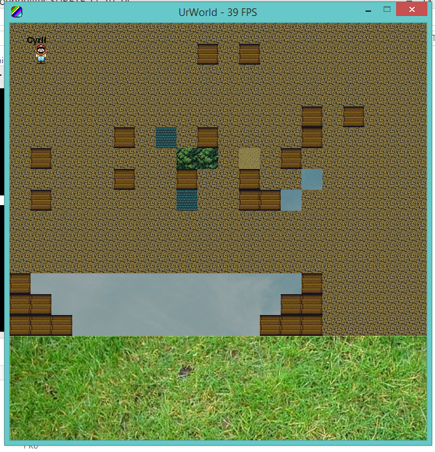
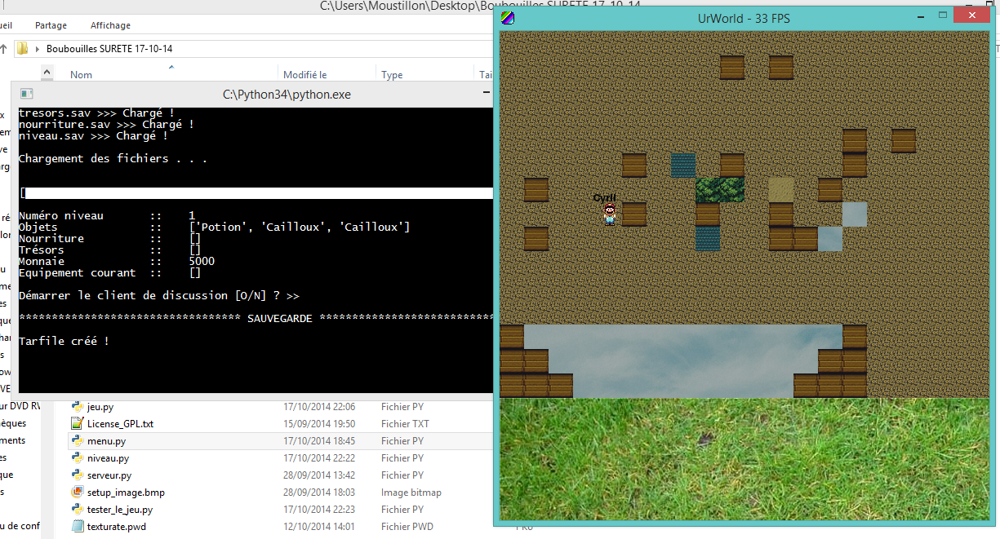

Introdution
Bonjour à tous, ici je vous présente mon jeu 2D de type animal crossing-like. Vous pouvez bien entendu suivre le sujet sur le site du zéro, ou du moins le très célèbre OpenClassroom.
Bonjour à tous et à toutes, je suis Folaefolc, actuellement étudiant en 2nde. Je code en python et ai pris connaissance avec pygame en juillet 2014. Cela est certes peu mais je me suis lancé un défi pour voir où j'en étais avec python 3 et pygame. Créer un jeu 2D était mon défi. J'ai commencé ce projet il y a un mois, en aout pour être exact. Le projet s'appelle "Boubouilles Land!", mais sérieusement, on s'en moque, le contenu est, d'après moi le plus important.
Plus sur le projet
Comme dit en introduction j'ai voulu me lancer un défi pour me tester. J'ai choisi un "mode" de jeu simple : on se déplace, on achète, on vend, on creuse, on pêche . . . Les graphismes sont vraiment simplistes, le code est plus important. Petit à petit mon code s'est étoffé de fonctionnalité et ce jeu est devenu plus qu'un défi : c'était désormais un projet à part entière.
Généralités
Je songe bien à coder une application pour changer de pack de textures et proposer d'en créer. Pour le moment on se déplace dans un monde en 2D, j'ai pensé à intégrer de l'isométrique (pas sûr). Il est possible de parler à un commercant, de creuser, de pêcher, de trouver des objets qui s'ajoutent à l'inventaire (un grand merci à josmiley pour son module reader :D ), de voir sa carte, j'ai intégré un choix de pseudo, le choix du mode de jeu (peacefull ou pas), la sauvegarde en quittant, je suis en train de rédiger un tuto en même temps que je code pour ne pas oublier de fonctionnalités (même si je sûr d'en avoir passées hélas).
Objectifs
J'essaye de rendre mon code le plus clair possible et bientôt je souhaite passer à une version du jeu en réseau (cela est tout à fait possible avec mon niveau (je pense pouvoir accueillir 5 personnes ce qui est déjà bien)) avec les pseudos au dessus des noms des personnages. J'espère pouvoir mener ce projet à bien et ajouter pas mal de choses en accord avec mes playtesteurs. Le jeu est open source et mon objectif par rapport à cette facette est de le rendre facile d'utilisation, de modification . . . Pour demander le code, contactez moi par e-mail !
Le projet et son originalité
Pourquoi mon projet est bien ? Euh... ben j'en sais rien en fait je ne fait que vous le présenter pour avoir des avis. Les moyens mis en oeuvre sont : une solide couche réseau, le jeu avec pygame pour python 3.4.0 (je pense pouvoir publier le jeu vers décembre, le mieux serait avant Noël pour mon oncle qui est aussi programmeur). Je distriburais le code source sur demande. Mon projet sur le net ? Oui pourquoi pas, une petite com' pour avoir des avis / mise place de contenu pour le jeu tel que des pack de textures Mais pourquoi mon projet est sympa ? J'utilise python qui donne une grande facilité de développement et aussi une rapidité d'exécution assez extraordinaire je trouve. Le jeu sera compatible avec Windows XP, Windows 8.1 et bien sûr Linux (j'utilise une version lite mais pas grave je me débrouillerai :) ). Voilà voilà.
Téléchargement
Informations : (v. 8.0.2)
- Le jeu contient actuellement 12000 lignes de code !
- Le jeu n'est pas encore disponible en version bêta, toute les versions actuelles sont des pré-alphas
- Ce logiciel nécessite Pygame (version Windows) et Python 3.4.0 (version Windows)
- La version compilée n'est pas encore disponible
- Le jeu est distribué sous une licence GPL
Téléchargement du jeu : Lien ici
Téléchargement du serveur : Lien ici
Avancement
Les points en orange sont en cours développement
- Correction d'un bug : la téléportation ne pouvait pas se faire plusieurs fois
- Amélioration de la gravité
- Animation de l'équipement lors du building des niveaux
- Résolution de bug d'affichage d'équipement
- Correction de bug lors du placement de bloc sans mouvement de souris
- Correction de bug dans la téléportation et dans l'écoulement de l'eau
- Bug précédent corrigé, erreur dans le code des 'escaliers' je vais voir cela le plus possible
- Un bug non corrigé a été trouvé : il se peut que sur une map on ne puisse pas se déplacer, il faut donc se téléporter plusieurs fois avant de re-pouvoir se déplacer normalement
- Ajout d'un bloc indestructible
- Corrections de bugs lors du début d'une nouvelle partie
- Le personnage peut 'se téléporte' au lieu du clique (il faut faire clique droit)
- Le personnage suit la souris du regard
- Correction de bugs autour de l'utilisation d'os.sep
- Utilisation massive d'os.sep pour préparer le jeu au passage sous Linux !
- On peut poser plusieur blocs à la fois sans avoir besoin de re-cliquer
- On ne voit plus le pointeur de la souris
- Correction de bug : le carré entourant la sélection n'est visible que si on bouge la souris
- Ajout d'un carré entourant le bloc que l'on pointe actuellement
- Code de la mise en réseau bientôt en place pour jouer en LAN (sur la même box) !
- Changement de la méthode delecture de niveau, gain en fps, building des maps stable !
- Bug détecté au niveau de l'arrêt de la musique avec 'f'
- Sauvegarde du niveau courrant qui a été modifié par l'utilisateur
- Correction de bug : la musique ne se jouait pas, ajout de son lors de l'arrivée d'un monstre
- L'eau "ruiselle", elle coue si en dessous de là où on l'a placé il y a du vide
- Le code est fait pour la fonctionnalité de building des maps à la terraria
- Ajout des crédits
- Légère modification du code, ajout mineurs et corrections de bug
- Réduction du code de la fonction pour pêcher pour optimiser encore plus les performances !
- Réduction du code de la boucle principale à environ 200 lignes !
- Ajout du choix de la 'position' du son : On ou Off (avec 'f')
- Ajout des collisions avec les personnages
- Ajout d'un log de sa version payante pour éviter une réutilisation de l'installateur du jeu
- Ajout d'une suite de 4 sprites Link (renommé en Lynk dans le jeu pour éviter les litiges) !
- Modification du système de parole des passants, bientôt applicable aux commerçants !
- Correction de bug
- Ajout de la technique dite des escaliers : on peut "grimper" et descendre grâce à une succession de bloc !
- Dynamisation du fond en fonction des déplacements uniquement (pour le moment, à voir pour des nuages dynamiques)
- Idée d'ajout d'un moteur physique pour inclure des particules et la gravité, ainsi que la possibilité de sauter
- Ajout d'une IA pour les monstres
- Ajout du module de parole par détection de la poisition courante et de l'orientation du personnage
- Une idée qui sera sympa je pense : passer le jeu en mode "Terraria-like" donc garder le concept de base mais utiliser une 2D vue de côté et pouvoir créer / modifier son univers !
- Amélioration du clique sur le menu
- Mise à jour du tutoriel
- Correction de bugs divers
- Ajout de son quand on pêche / creuse
- Ajout d'une 'IA' pour les personnages
- Régulation du volume du jeu par le menu
- Création d'un invite compilé (en python) de manière à lancer le jeu
- Compilation du code dans un format caché pour ne pas y avoir accès, création d'un invite pour lancer le jeu
- Ajout du controle du nombre de FPS depuis le menu
- Ajout du joystick
- Ajout de la nuit en fonction de l'heure actuelle par ajout de surface transparente
- Possibilité de choisir le mode Peacefull
- Modification de la carte pour afficher les numéros de niveaux où des monstres sont présents
- Carte fixée, pas de GUI, juste du texte
- Modification du système de base de données, juste des séparateurs ';'
- On pourra ainsi avoir plusieurs parties
- Connexion à une base de donnée : système plus simple et plus performant (récupération d'une chaine entre {} puis [] et enfin ())
- Serveur en cours de modification pour ne pas qu'il se ferme lorsqu'un client se déconnecte
- Création en cours du système de commerçants
- Idée de mettre des monstres qui attaquent le village
- Lors du démarrage du jeu : fenêtre tkinter pour choisir un pseudo qui sera affiché au-dessus de la tête du personnage
- On interchange les niveaux avec les touches '1', [...], '9' disponible depuis les 2 emplacement de chaque chiffres sur le clavier
- Fixation d'un bug : les images de poissons / trésors ne s'affiche pas
- Ajout de la régulation des FPS autour de 50 environ
- Ajout des images pour les poissons / trésors
- Creuser / Pêcher avec des conditions : il faut la pelle ou la canne à pêche et de l'eau pour exécuter les actions correspondantes
- Sauvegarde intégrale du sac et du niveau courant avec 'echap' qui quitte aussi le jeu
- Ajout du module reader pour pouvoir 'dire' des choses à l'utilisateur
- Intégration de la possibilité de pêcher / creuser et de trouver des choses (coffres / poissons) ajoutable à l'inventaire
- Création d'un système de sauvegarde avec le module Pickle
- Les niveaux sont désormais interchangeables en utilisant les touches 'a' et 'q'
- Les niveaux sont chargés en tilemapping, il n'y a pas de collisions
- Le fond du menu devient aléatoire et des musiques aussi choisies aléatoirement viennent s'y greffer
- Déplacement pixel par pixel
- Création d'un menu pour choisir un personnage et du jeu qui hérite du choix du personnage
- Apprentissage de Pygame pour Python 3.4.0
- Idée du jeu
Screenshots

Réglages des paramètres du jeu

Réglages des paramètres du jeu

Réglages des paramètres du jeu

Réglages des paramètres du jeu

Réglages des paramètres du jeu

Je creuse mais je ne trouve rien

Test du pseudo (fenêtre de connexion)

Affichage des crédits

Build de la map (fait-maison)

Sauvegarde (vu par la console)
Votre contribution
Vous pouvez contribuer au projet et compléter le dictionnaire des textes de PNJ. Plus il sera étoffé, mieux ce sera ;)
Téléchargez le dictionnaires des textes ici
Tutoriel et notes
Menu
Il faut cliquer sur un personnage pour le sélectionner (il se peut que cela ne marche très bien. Pour le bon fonctionnement faites un glissé-déplacé sur le nom du personnage pour le selectionner puis lancez le jeu normalement).
Appuyez sur 'j' pour lancer le jeu, ou cliquez sur le bouton.
Jeu
'1', [...], '9' permettent de changer d'objet actuel (pour construire son monde);
'e' permet d'ouvrir l'inventaire;
'Up', 'Down', 'Right' et 'Left' permettent de se déplacer et de changer de niveau;
'd' permet de parler à la personne la plus proche;
'x' permet de creuser / pêcher en fonction de l'équipement actuel;
la molette de la souris permet de changer d'équipement;
'echap' permet de sauvegarder le contenu du sac ainsi que ses sous;
'c' affiche la carte et indique la présence par niveau (à chaque fois que cette carte est ouverte, la position des monstres change);
'[...]' (toutes les touches) permettent de passer au texte suivant lorsque votre inventaire est ouvert ou que vous parlez à une Boubouille;
'f' permet de choisir si le son est On ou Off;
le controle au joystick est possible avec la croix directionnelle;
le clique gauche permet de placer des blocs, le clique droit de se téléporter (attention à la gravité !);
Ce "tutoriel" n'est pas fini.
Note n°1 : il se peut que l'inventaire vienne à se bloquer et ne pas réagir à l'appui d'une touche. Dans ce cas, appuyez sur une touche (peu importe laquelle), et créez un évenement de mouvement de souris, déplacez votre pointeur sur la surface de jeu, tout simplement. Cela est à faire après l'appui puis la relâche d'une touche. Répéter l'opération jusqu'à ce que l'inventaire se ferme. Puis rouvrer-le : le bug est censé être résolu !
Note n°2 : il se peut que le jeu se démarre mais que le menu ne s'affiche pas et que la fenêtre se coupe. Cela est dû à une erreur dans 2 fichiers du dossier Parties/ :
- dossier.sav, il ne doit contenir que 2 caractères comme ceci : 1/ (le nombre peut varier de 1 à 4 compris)
- boubouilles.sav, il ne doit contenir qu'un seul 'mot' : soit Guerrier, Magicien, Boulanger ou Paysan
Après rectification, le jeu doit se lancer correctement.
Un bug non corrigé a été trouvé : il se peut que sur une map on ne puisse pas se déplacer, il faut donc se téléporter plusieurs fois avant de re-pouvoir se déplacer normalement
Retours et copyrights
Contactez-moi par mail : python34_france [at] outlook [dot] fr ! ou urworld [at] outlook [dot] fr !
Logo 'UrWorld' fait par NeoBlast.
Images (des niveaux) faites par Folaefolc.
Images (des personnages) faites par Shamaneileen.
Sons (courts) trouvés sur FindSound.
Musiques (Forest_Maze_Symphony, Raibow_Road_Remix, et Rainbow_Road_Rock_II) faites par Mephiles200108420, copyright Nintendo ©.
Jeu (idée, code, et concept arts) faits par Folaefolc.
Tous droits réservés à Kubiangle ©®tm et à Folaefolc.